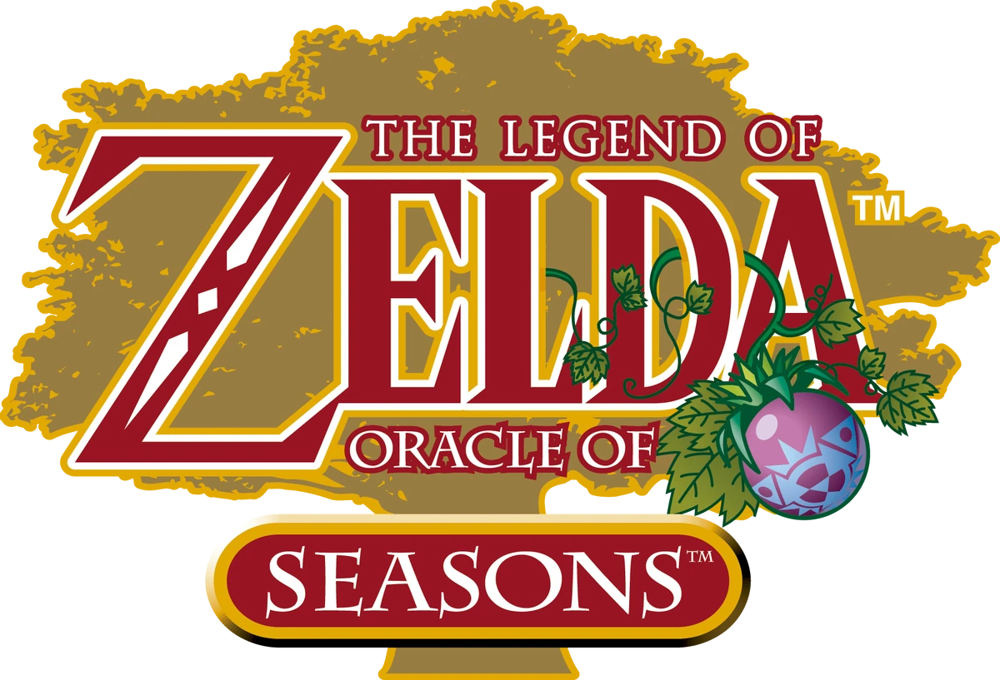

The
best
Zelda game for the Gameboy Color.
Table of Contents:
The intro
The sprites
The characters
The exploration
Reason 1: The Intro
Watch this...
Reason 2: The Sprites
Reason 3: The Characters
Reason 4: The Exploration